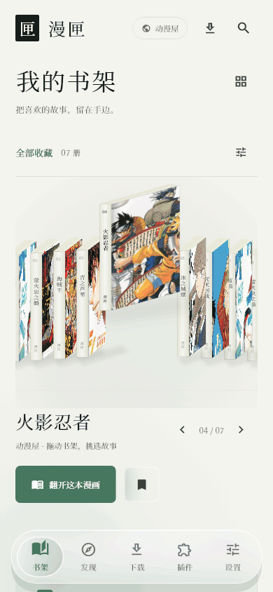
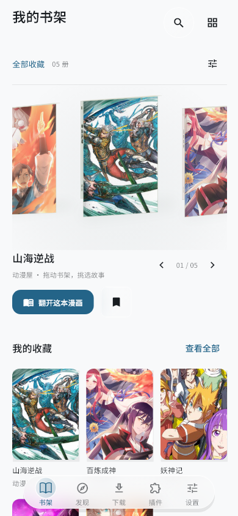
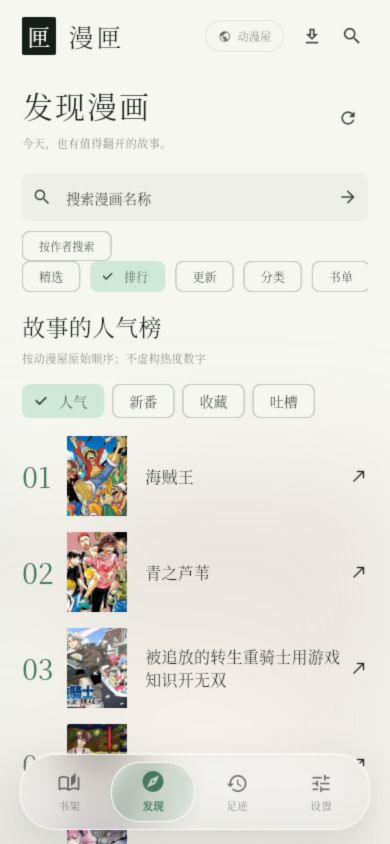
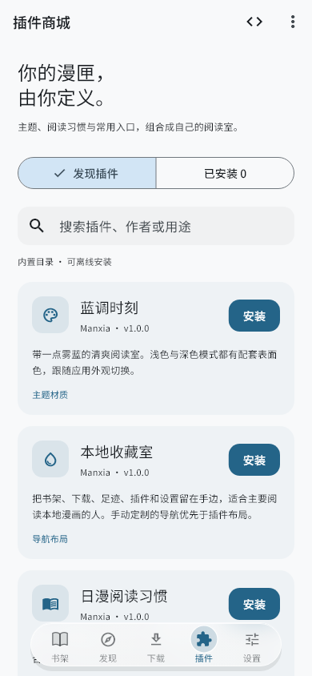

把喜欢的故事，留在手边。
一个注重书籍质感与阅读体验的 Flutter 漫画阅读器 · Android 7.0+
Keep the stories you love within reach.




不只是能读，而是读起来像在翻一本真正的书。
封面按原图全幅装订，书脊颜色取自封面本身；点开一本书，封面沿书脊翻开，返回时合拢归位。惯性滚动、弹性吸附、密度可调，也可切换列表视图。
主题、阅读预设、漫画源、导航布局都做成可组合的 JSON 插件，免编译安装。内置插件商店，支持本地文件与自定义在线仓库，安装包经 SHA-256 校验。
默认接入动漫屋：每日推荐、热门／新作／收藏排行、分类与连载状态筛选、标题作者搜索，排名遵循源站原始顺序，不编造热度数字。
条漫纵滚、横向／纵向翻页、左右阅读方向、宽屏双页，弯曲翻页特效、双指缩放、自动裁边、自动滚动，阅读位置按书单独记忆。
图片、文件夹、ZIP/CBZ、PDF 都能导入整理成自己的书库；章节下载队列支持并发控制、暂停续传与 CBZ 导出，收藏只存在你的设备里。
JSON 数据备份、全库 ZIP 备份（含离线图片与 SHA-256 清单），WebDAV 支持元数据合并与整库迁移；某个源失效时可跨源续读，藏书和进度不丢。